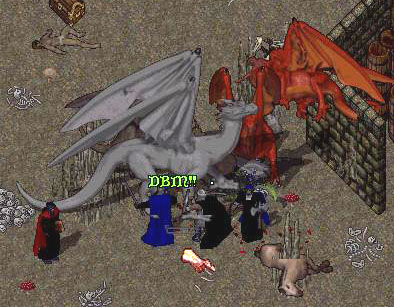
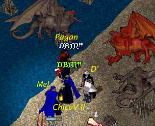
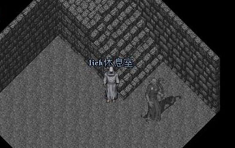

才要踏入門口而已兩邊石像就開口說：「你若敢進入這個門，將無法活著出來！」....聽到頓時一陣心寒，我的壞預感又出現哩....我覺得這次任務將是非常凶險....
CV老師找到了他的朋友 Pagan，正被傳說的"巴哈公會"中的
Chenma救醒，Pagan 說原來他和巴哈公會是舊識哩。互相寒暄了幾句後，才知道
Pagan 就是我們要救的人。
這時忽然四處冒出了一堆 Lich偷襲，大家馬上聯手反擊：
一時爆炸聲不絕於耳，雙方魔法狂互轟，而 CV老師便帶頭衝鋒，近身圍攻 Lich，嚇的
Lich們死的死、傷的傷。獲得勝利之後，見大家都平安無事，救人也救到了，因此決定撤退哩。
眾人即將鳥獸散時，CV老師一陣思考後居然說又想吃龍肉進補........
(根本是想打包回家配酒)；哀哀地城最深處就是龍群聚集之地，也是出名的地底湖呀。
這時 Pagan 也加入隊伍和我們 [DBM]
一起去。Pagan是位高級魔法師
，我們剛好也正缺魔法師，打龍的勝算又增加了不少，但是我還記得可怕的龍把我燒上天哩。( >_<
)
不過既然是 CV老師的計劃我也只能跟進....此時我覺得奇怪.... Lich們都不知躲到哪去哩，讓我心中倍感不安，總覺得事有奚竅......
但眾人已進入下層也只能乖乖跟著進入地底層。

一進入馬上看見大小雙龍站著等我們，眼神好像要把我們吞了(
>< )
這時 CV老師卻大喊：「看啥米！看是你吃了我！還是我吃了你！」使得我們一時士氣大增哩。
接著開始分工合作，D'開始彈出他的挑撥魔音，CV老師也開始狂放毒，Pagan也用出火焰攻擊連連狂轟，我則在後面拿斧頭偷襲。
不過大龍真是強啊，居然把小龍給吞了@_@"，接著我們就被追殺....所幸我們發揮了前所未有的默契，有人不支倒下就有人馬上去救醒，其他人則去引龍打游擊。
不知殺了好幾波的龍群攻擊後終於打倒大龍和一堆小龍，到達了湖邊休息，看著烏黑的湖水就想到不知有多少英雄葬身於此，如今我們卻平安到達了真是感動呀
，重點是我又賺了一筆撿骨錢嘿嘿嘿....
眾人收拾裝備準備撤退時，我看到 CV 老師背後背著一包東西 (
一定是龍肉要帶回去配酒 )
，但看起來讓 CV老師遲鈍不少，但反正他高興就好。
正準備踏上第三層時突然聽到一聲 Pagan 的叫聲，CV老師感到不對往上一衝但又是一聲慘叫......我和D'頓時一陣沉默........我往上探頭一看，居然一大堆
Lich 躲在樓梯口等人上來，而且看到 CV老師他們兩個都已經掛哩("真是人為錢亡、CV老師為下酒菜而死呀！")，頓時才知道原來剛剛
Lich 是在"絡"兄弟來PK我們，好一堆陰險的 Lich。
此時CV老師復活後決定合力殺上去，而Pagan去準備超渡
Lich儀式，但是我們都沒帶專剋不死怪物的銀製武器 (沒錢)，CV老師那把銀鎚又被
Lich們搶走哩....
不過也沒別的辦法，於是大家一起往上衝，一上就是一場大混戰呀...在混戰中被打中了不知道幾發火球，情況越來越不利。CV老師要我引開
Lich，我引開幾隻 Lich 到旁邊後準備使出『隱』時居然發現這房間超小的，根本沒地方躲
( >< )
我趕緊撤回隊伍，結果發現CV老師又掛哩，只剩D'獨撐，突然後面又是火球連連，我馬上燒焦大叫暈過去哩。D'見人單勢弱正想落跑時，被
Lich們聯手頭上一記杖擊也當場KO，又像大冒險第一天情況相同全掛哩 -.-
最後大家就分散想辦法復活；我靈魂回竅後就偷偷從旁邊跑進去隱在旁邊撿裝備。沒想到旁邊月門一開
Pagan 回來哩....但才開始儀式沒多久就慘遭 Lich 圍毆，我是 [DBM]
的人怎可如此眼看隊友被圍毆勒，當場不顧身負重傷現身一戰，但我才沒幫 Pagan 多久他就又 OoOOoo
哩，換我被 Lich圍毆也 ooOOo 哩。
結果又回到隊伍全掛狀況....變成靈魂聊天大會，四隻靈魂在 Lich旁邊互相聊天。結果
Lich好像認出我來，大概看我剛剛太夠義氣居然把我帶到 Lich休息室裡關住，還用無形牆讓我靈魂出不去
>.<

就看到幾隻 Lich在這房間休息後就又出去了.... 真是奇景呀，往前站高點還看的到
Lich撿我們的骨......最後CV老師找到我冒出地面的"頭"
，決定要試試傳說的神聖大法，要我趁 Lich不在趕緊祈禱 哈爾普神 的幫助，以逃出
Lich的魔掌。
還好大家終於回到附近的 Vesper
城哩，不過今天不但沒賺到撿骨錢還裝備全無哩......